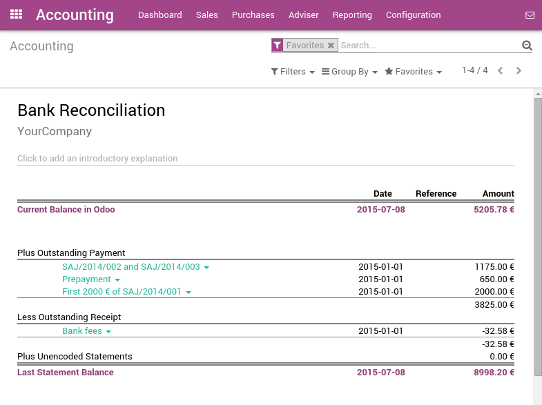

There are two ways to handle payments received by checks. Odoo support both approaches so that you can use the one that better fits your habits.
- Undeposited Funds: once you receive the check, you record a payment by check on the invoice. (using a Check journal and posted on the Undeposited Fund account) Then, once the check arrives in your bank account, move money from Undeposited Funds to your bank account.
- One journal entry only: once your receive the check, you record a payment on your bank, paid by check, without going through the Undeposited Funds. Once you process your bank statement, you do the matching with your bank feed and the check payment, without creating a dedicated journal entry.
We recommend the first approach as it is more accurate (your bank account balance is accurate, taking into accounts checks that have not been cashed yet). Both approaches require the same effort.
Even if the first method is cleaner, Odoo support the second approach because some accountants are used to it (quickbooks and peachtree users).
Note
You may have a look at the Deposit Ticket feature if you deposit several checks to your bank accounts in batch.
Option 1: Undeposited Funds
Configuration
- Create a journal Checks
- Set Undeposited Checks as a defaut credit/debit account
- Set the bank account related to this journal as Allow Reconciliation
From check payments to bank statements
The first way to handle checks is to create a check journal. Thus, checks become a payment method in itself and you will record two transactions.
Once you receive a customer check, go to the related invoice and click on Register Payment. Fill in the information about the payment:
- Payment method: Check Journal (that you configured with the debit and credit default accounts as Undeposited Funds)
- Memo: write the Check number

This operation will produce the following journal entry:
| Account | Statement Match | Debit | Credit |
|---|---|---|---|
| Account Receivable | 100.00 | ||
| Undeposited Funds | 100.00 |
The invoice is marked as paid as soon as you record the check.
Then, once you get the bank statements, you will match this statement with the check that is in Undeposited Funds.
| Account | Statement Match | Debit | Credit |
|---|---|---|---|
| Undeposited Funds | X | 100.00 | |
| Bank | 100.00 |
If you use this approach to manage received checks, you get the list of checks that have not been cashed in the Undeposit Funds account (accessible, for example, from the general ledger).
Note
Both methods will produce the same data in your accounting at the end of the process. But, if you have checks that have not been cashed, this one is cleaner because those checks have not been reported yet on your bank account.
Option 2: One journal entry only
Configuration
These is nothing to configure if you plan to manage your checks using this method.
From check payments to bank statements
Once you receive a customer check, go to the related invoice and click on Register Payment. Fill in the information about the payment:
- Payment method: the bank that will be used for the deposit
- Memo: write the check number
The invoice is marked as paid as soon as you record the check.
Once you will receive the bank statements, you will do the matching with the statement and this actual payment. (technically: point this payment and relate it to the statement line)
With this approach, you will get the following journal entry in your books:
| Account | Statement Match | Debit | Credit |
|---|---|---|---|
| Account Receivable | X | 100.00 | |
| Bank | 100.00 |
Tip
You may also record the payment directly without going on the customer invoice, using the menu . This method may be more convenient if you have a lot of checks to record in a batch but you will have to reconcile entries afterwards (matching payments with invoices)
If you use this approach to manage received checks, you can use the report Bank Reconciliation Report to verify which checks have been received or paid by the bank. (this report is available from the More option from the Accounting dashboard on the related bank account).
